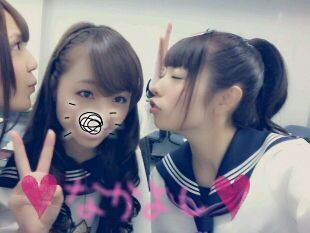

| 2012/12 28 Fri | 来年はliveいっぱいいっぱ いしたいキモチよーー☆ rotty |

いぇーーーーーい☆☆☆
Rotty♪だよぉ〜! !
皆元気かーい?!
とゆうことでえ、
無事にZepp東京live★!!
終えることができましたw
(>∀<)))
わいわぁーいなキモチ。
流石rotty夢のみなども, , ,
流石です !
ちゃんと、 ろってぃこーる
聞こえたぜ*・ω・*
昨日 これなかった方も
皆ろってぃ夢だからねん(>ω<)
二階にいた方も
一階にいた方も
奥の方にいた方も
みーーんな
見えてましたよっ!!(・∀・)
乃木坂ファミリーー☆★☆★
最高だwwww
昨日のliveで
自分たちは
少しずつ少しずつ
確実に成長してきたんだ。
と実感することが
できました^^
本当に楽しかった ! !
去年の私たち,
８月にやった
初めての乃木坂46の
単独live...
今までになかったものを
ちょっと掴めた気がした (・ω・`*)
やっぱり、最後の
ぐるカー
おいしゃん
走バイの盛り上がりはねえっ
ほんとにねえっ
もうまったく 。
言葉にできない。
らーらーら〜
ららーら〜
言葉にできなあい。笑
ファンの皆様
メンバーの皆
このliveに携わってくれた
スタッフの皆様
ほんとーにっ
楽しい時間を
ありがとうございましたっ(・∀・)
感謝しています。
おおー
なかなかの
目しょぼしょぼぉ〜
ごめんなさい
睡眠不足やの。笑
とゆうことで
ろってぃは とりあえず
今から寝るね ♪
誰か一緒に寝よか *^^*笑
また更新しまーーす>ω<))
おやすみなさい...〃ω〃
大丈夫だよん(*´ω`*)
のし。

コメント(172)
2012/12/28 21:12